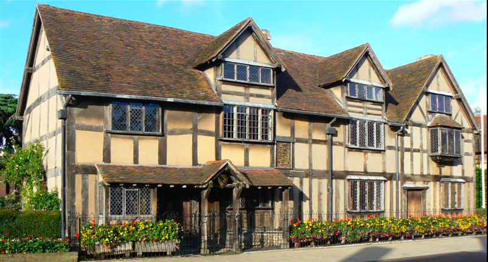
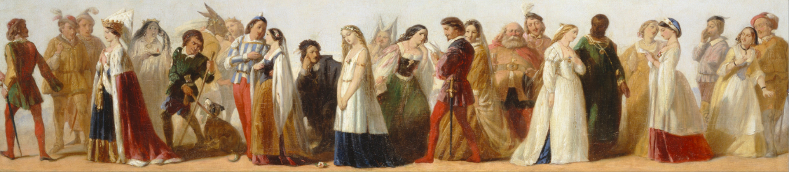

La vida de un genio

Existen muy pocos hechos documentados en la vida de Shakespeare, aunque es probable que naciera el 23 de abril de 1564. Lo que sí se puede afirmar es que fue bautizado en la Iglesia de la Santísima Trinidad en Stratford-upon-Avon, Warwickshire, el 26 de abril de ese mismo año y falleció en ese mismo lugar el 23 de abril de 1616, según el calendario juliano (3 de mayo en el gregoriano), el supuesto día en el que cumplió 52 años.
Obras

Cuando Shakespeare se inició en la actividad teatral, ésta se encontraba sufriendo los cambios propios de una época de transición. En sus orígenes, el teatro en Inglaterra era un espectáculo de tipo popular, asociado a otras diversiones extendidas en la época como el bear baiting (pelea de un oso encadenado contra perros rabiosos). Sus raíces se encuentran en la etapa tardomedieval, en una triple tradición dramática: los "milagros " o "misterios" (mystery plays), de temática religiosa y destinados a solemnizar las festividades de los diferentes gremios; las moralidades u "obras morales" (morality plays), de carácter alegórico y representadas ya por actores profesionales: y los "interludios" cortesanos, piezas destinadas al entretenimiento de la nobleza.
Los nobles más destacados patrocinaban grupos de actores que llevaban sus nombres. Así surgieron, en la época isabelina, compañías como The Hundson Men (luego Lord Chamberlain's Men), The Admiral's Men, y The Queen's Men, entre las más relevantes. En ciertas ocasiones, estas compañías teatrales realizaban sus representaciones en el palacio de sus protectores aristocráticos. The King's Men, por ejemplo, después del apadrinamiento de la compañía por el rey Jacobo I, actuaban en la corte una vez al mes.30 Contar con el respaldo de un mecenas era fundamental para asegurar el éxito de la obra en el futuro.
En el First Folio se clasifican como «obras históricas» (en inglés, histories) exclusivamente las relacionadas con la historia, relativamente reciente, de Inglaterra. Otras obras de tema histórico, como las ambientadas en la antigua Roma, o incluso Macbeth, protagonizada por un auténtico rey de Escocia, no se clasifican en este apartado. Son once en total (o diez, si se excluye Eduardo III, modernamente considerada apócrifa). La fuente utilizada por el dramaturgo para la composición de estas obras es bien conocida: se trata de las Crónicas de Raphael Holinshed.